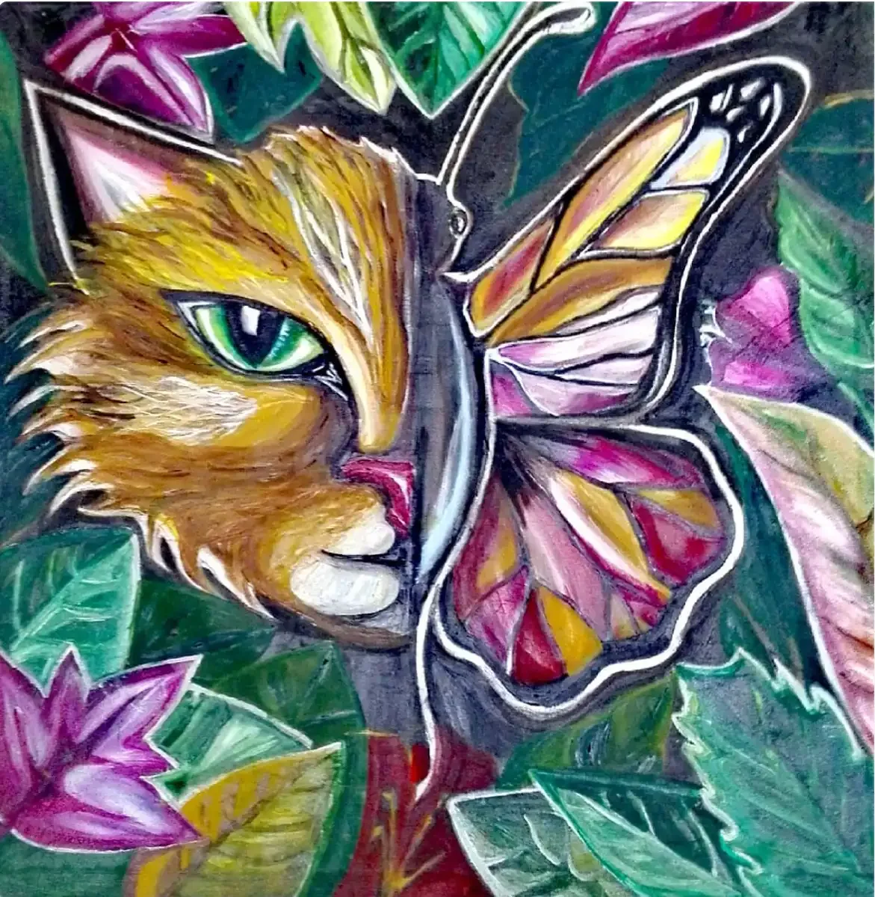
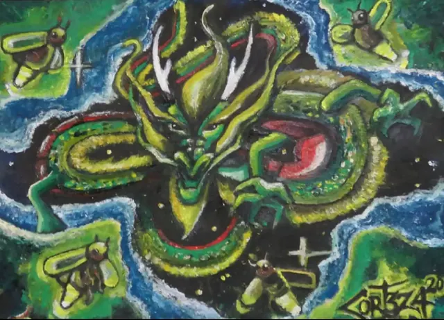
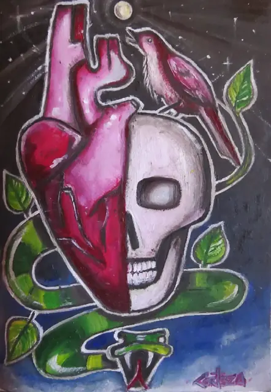
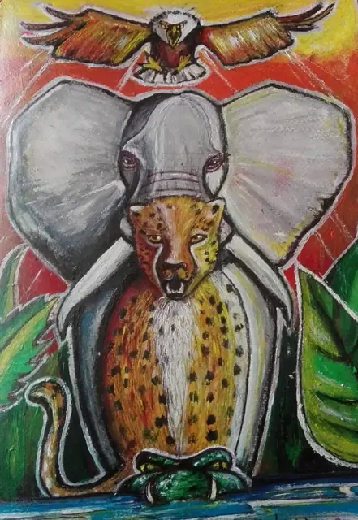
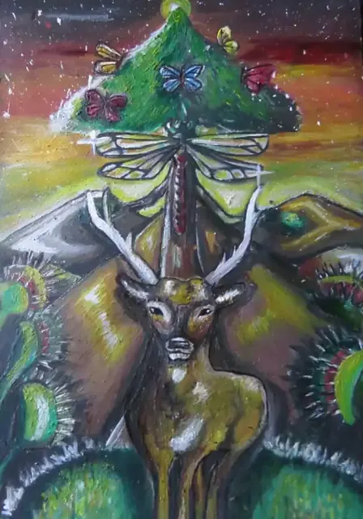
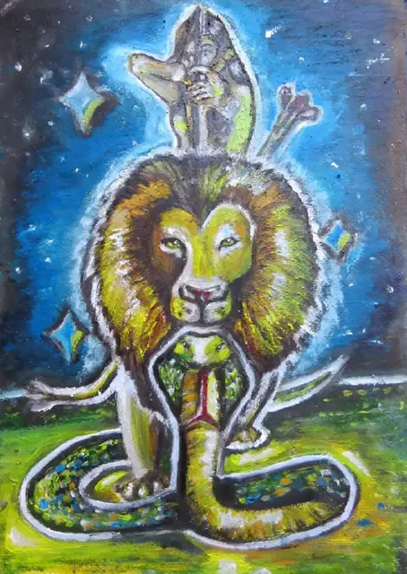
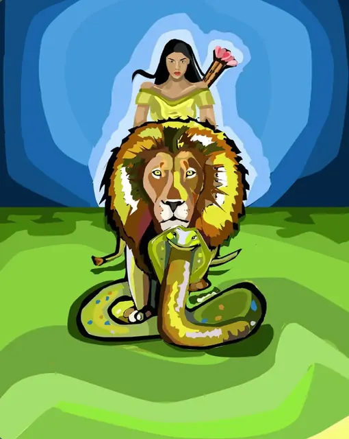
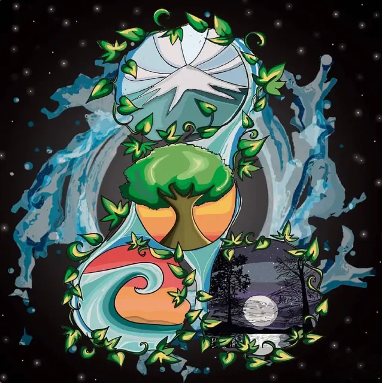
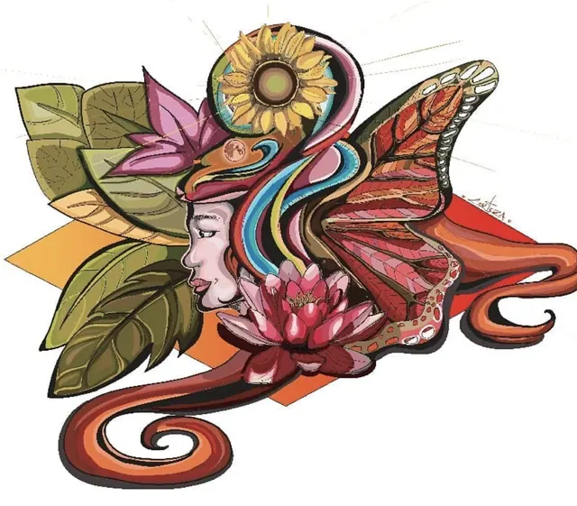
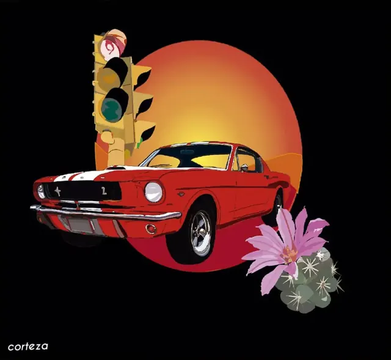

Galería
Pinturas e ilustraciones propias, creadas entre 2018 y 2020. Contornos marcados, color saturado y criaturas híbridas que mezclan animales, plantas y personas.

Salvajemente frágil
Pintura · 2019
Obra de entrada a la galería: un rostro dividido entre el gato y la mariposa, rodeado de hojas y flores.
Pintura




De la pintura al vector
La misma composición, primero pintada (marzo de 2020) y luego recreada en digital (agosto de 2020).


Ilustración digital


